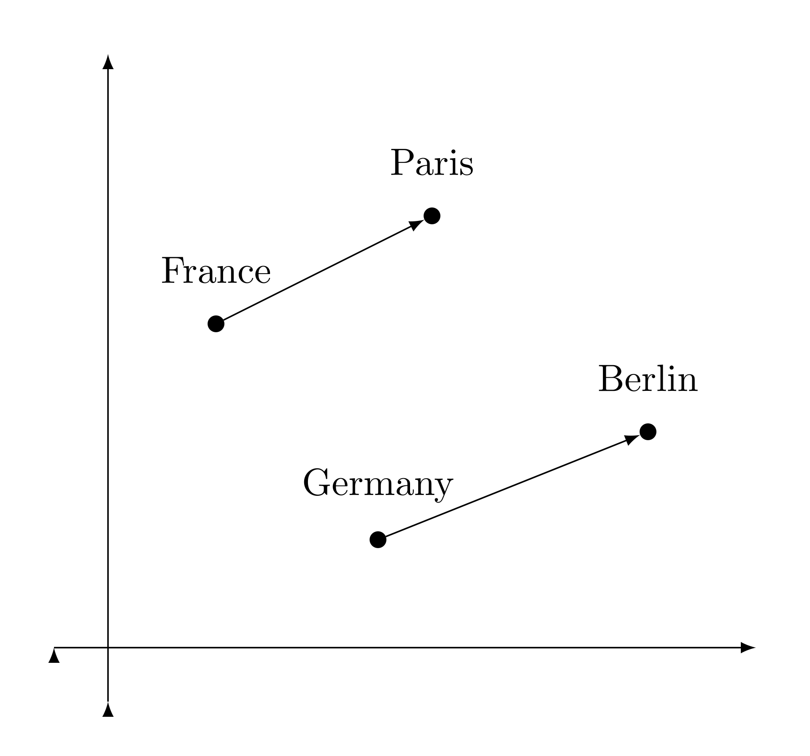
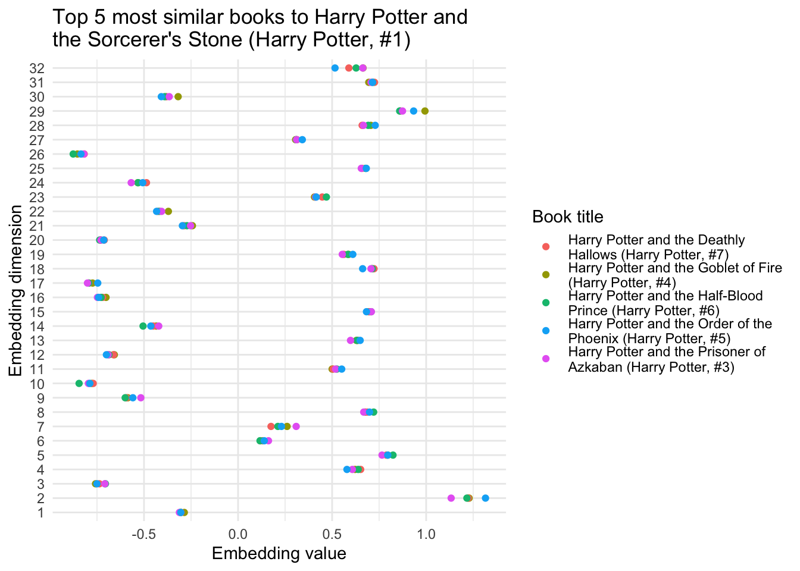
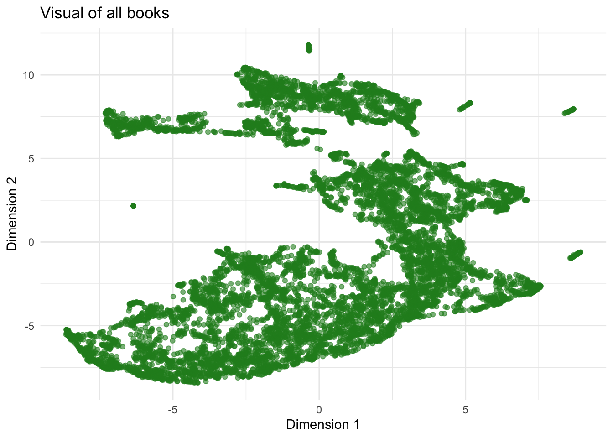
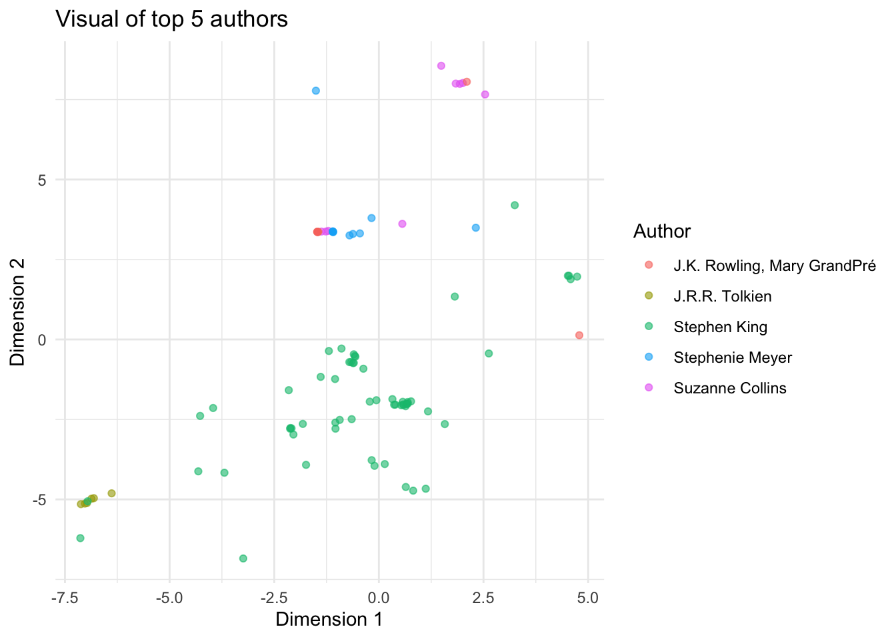
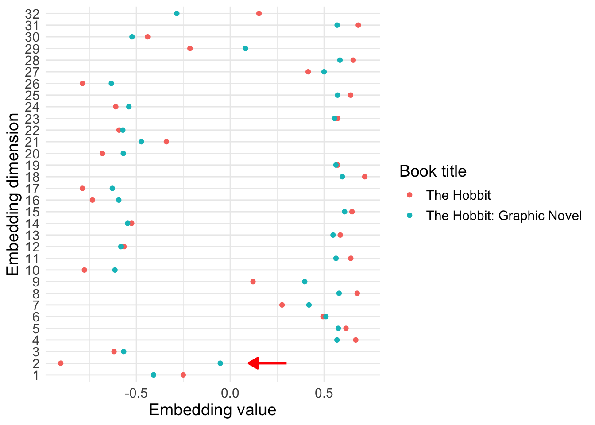

| user_id | book_id | rating |
|---|---|---|
| 1 | 1 | 3 |
| 2 | 2 | 5 |
| 3 | 2 | 4 |
| 3 | 3 | 3 |
| 4 | 1 | 2 |
When you send a message to an AI model, how does it “know” what your words “mean”? It should go without saying that it is quite complicated, and the specific layers within a particular large language model (LLM) can vary a bit. I am not an expert on large language models, but I know they are a specific type of neural network. They use an architecture called a transformer and a technique called attention (this super cool graphic walks through some of the details).
The first (or maybe second) step in this kind of neural network is called embedding. An embedding layer or embedding matrix (a large grid of numbers) allows the model to convert categorical or text-like inputs into numbers. For example, with an LLM, there may be hundreds of thousands of possible input words. With the embedding layer, the model converts each word to a list of 200 numbers (for example). Each word can then be compared to another, so similar words will have similar lists (called vectors) in this high-dimensional space.
This allows you to do vector math, adding and subtracting words to get new meanings. You may have seen examples like this before: King - Man + Woman = Queen. Or maybe something like France + Capital = Paris. Here is an example from Wikipedia:

In this post, I will dive a bit deeper into embedding layers, how they are constructed, and what you can do with them. I will use an embedding layer I trained using a book review dataset.
If you’re interested in more technical details about that, you can check it out here. I have simplified things here to make this subject approachable for anyone.
How are embeddings trained?
As mentioned earlier, embeddings are one possible “layer” of a neural network model. LLMs are a type of neural network, with many layers all playing different, sometimes opaque roles. The layers are just really big lists or matrices of numbers, and most neural networks just do some simple math (multiplication and addition) for the majority of the calculations to give you a prediction.
To make this a bit more concrete, I created a very simple collaborative filtering recommendation system using book reviews. Put simply, I created a simple model to predict what rating different users gave to different books.
Here is an example of what the data looked like. In reality there were millions of rows; here are just five.
Here’s how I set up the model. I created two embedding matrices, one for users and one for books. Each embedding matrix has 32 columns, and one row for each book/user. To get a prediction of the rating for a given book-user pair, you just take the dot product between the corresponding rows of the user and book embedding matrices. In this case, the dot product just functions as a measure of similarity: users and books that are similar (read: user rates the book high) will have a high dot product. Users and books that are different (user rates the book low) will have a low dot product. There’s some adjusting to make the math work but that’s all–just seeing how similar different rows of these 32-column matrices are.
The values for those matrices come from the training process. You let the model try a bunch of random numbers, see how close it gets, and have it try to improve. With a few minutes on a standard laptop, you can get the error down to less than 1 star.
What you get out the other side are these embedding matrices. Goodreads or Amazon might use this type of information to recommend new books to you: They take your 32 numbers, and see which books most closely match up.
In other words, it’s just data being input and output. There’s no direct meaning being encoded about the authors, the genres, the publication year, or the user’s demographics. It’s just looking at what books users liked, and if similar users would like similar books.
What can you do with embeddings?
2. Look at specific embedding values
We can actually look at the specific 32 embedding values and visualize how similar they are. Here are the top 5 books similar to Harry Potter and the Sorcerer’s Stone:

3. Create a 2D representation
Since looking at 32 values at once can be kind of tricky, we can use some statistical techniques to compress it down to a 2-dimensional space.
Here is the 2-D version of all of the books’ embedding values. The actual values of these two dimensions don’t really matter; these are just “discovered” by the algorithm I used. We could imagine them representing something like audience age and genre, but it’s hard to conclude anything for real. Still, it is interesting to see that there are distinct shapes and clusters:

Then, we can look at how some of the top authors cluster together. Here are the top 5 authors by number of ratings. You can see that the Young Adult authors like J.K. Rowling, Suzanne Collins, and Stephanie Meyer are closer together toward the top. Stephen King has an area in the middle, and Tolkien is on the bottom left, quite far from the modern fantasy/YA authors.

4. Try to discern what different values mean
This is somewhat more of an art than a science, but here is an example. We can compare the embedding values for The Hobbit and The Hobbit: Graphic Novel. You can see that most of the values are very similar, but some (like dimension 2, highlighted with red arrow) are very far apart. You could, in theory, analyze differences like this to discern whether certain dimensions themselves have a meaning. In this case, maybe a higher value of dimension 2 indicates “graphic novel” while a low value indicates “text only”. Or it could just be a chance difference.

5. Predicting books to read next
Finally, you can predict what books you should read next. I don’t have an example for this one, because it requires putting together a listing of books I have read and rated. I read plenty but I did not take the time to cross-reference with the books in my dataset here.
Does AI know what our words mean?
So does a machine learning model, neural network, or large language model know what our words mean? In a way, maybe. That first embedding layer of an LLM works in much the same way as this one, but with words instead of books. The words are translated into (even bigger) vectors (lists of numbers) that embed some meaning in their values.
At the same time, these are just numbers used to do math. The relationships we observe in the embedding layers, while sometimes meaningful, are the result of meaning we already give them. In the books example, there could be a value for graphic novels or one for genre–but there also might not be.
Embeddings are also used for things like images. Image recognition networks sometimes develop specific layers that can recognize things like faces, animals, or shapes. But sometimes we can’t understand what the layer is doing. If there is some discernible meaning, it’s probably because there’s such a strong relationship in the data, not because the model actually “understands” anything.
In the end, it’s just data and math. Still, I find it impressive and even somewhat magical that machines can create a semblance of meaning just by being fed our words, images, and preferences.